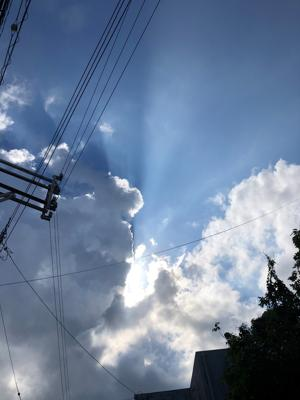
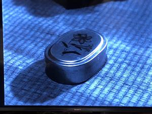
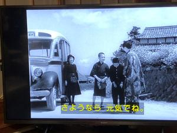

うるがいの話 ある日
最新: 宮里悦先生【うるがいの話 ある日】とは 一日だけのプログです
『うるがいの話』の最新一日だけのプログで、通信料が少なく経済的だ。カニの画像をクリックすると全ての日付が載る『うるがいの話』サイトを表示します
|
|
【うるがいの話】 うるがい(ｳﾙｶﾞｲ urugai)とは、『もずくがに』の名前でとても大きくなります。 |
|---|---|
|
|
【カミマヤーの話】 猫のことを方言でマヤーといいます。カミマヤー（kamimayaa）とは、神の猫のことです。 |
|
【たながぁの音楽】 たながぁ（ﾀﾅｶﾞｰ tanagaa）とは手長えびのことで、何種類かあり大きいのは車 エビぐらいになります。 |

|
【ぶながぁの話】 ぶながぁ(ﾌﾞﾅｶﾞｰ bunagaa)とは、赤い髪の毛、赤い身体、そして身長は１ｍ２０ｃｍ ぐらい、川の蟹を食べているの目撃された。場所は沖縄県国頭郡大宜味村のと ある村僕の隣近所に住んでいる爺さんから、聞いた話です。 |
|
|
【ギーマの話】 ギーマ(giima)とは、山原の里山に咲くスズランに似た、 花を付けます。実は食べられます、 気が付くと口の周りが紫になっています。 |
2022年09月10日 (土）宮里悦先生
16:37
  

宮里悦（みやざと・えつ）先生は、私の小学１年生の時の担任だった。そして
母親と私の２世代を教えた先生である。とても偉い先生で、ネットのコトバク
にも載っているぐらいである。壺井栄の【二十四の瞳】は小学生低学年の頃、
学校の図書館から借りて、涙が出てくるので布団を被って読んだ記憶がある。
もう、５０年以上も前にことだが、昨日録画を見る、やはり泣いた。しかし、
小学生の頃、意味が分かっていたのだろうか、アカの意味も分からないのに。
ただ、小学生向けの本だっただろうから。軍国主義の批判が映画で描かれてい
るが、今のロシアの国は、いまだにそうなのだろうと考えらせられる。映画の
中で、アルマイトの弁当箱がでてきた、小学生低学年の頃は、弁当箱持参で私
のアルマイトの弁当箱は、デカい長方形だった、少し恥ずかしかった。そして
、バスは車掌さんが、懐かしい。映画の主人公の年老いた小西先生が、教員最
後として岬の学校に赴任し、出席を取る。そして、新任教員として教えていた
生徒の子供がいる。宮里悦先生も同じだったのだろうか、おそらく映画と同じ
くあなたは、母親の子供でしょうねとか言ったかもしれないが、覚えていない
。なんせ、私は小学生に上がるとき、１０以上の数が数えられないので、一年
遅らせようかと言われていたらしい。
今日から風が強くなってきた、屋敷うがんの時間を繰り下げる。風で線香が良
く燃えた。
１６時２３分 ビットコインの総資産 ￥８、８７４↑